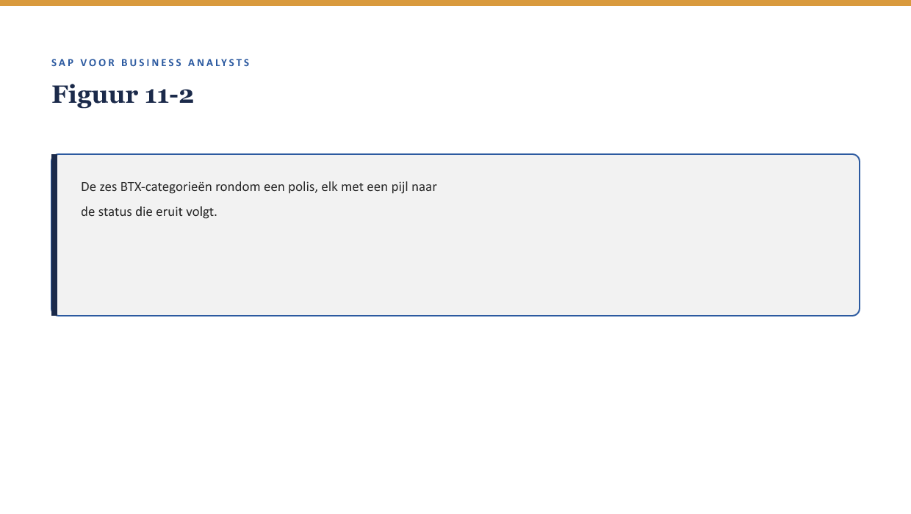

Cursus SAP voor Business Analysts · Niveau 2 (Professional) · Deel 11 van 30
FS-PM: het polisproces
Niveau 1 eindigde met een fit-gap-analyse zonder dat Sanne precies wist hoe FS-PM een polis daadwerkelijk vastlegt en muteert. Priya Chandra opent niveau 2 met een simpele stelling: “Alles wat er in FS-PM met een polis gebeurt, is een BTX. Als je dat begrijpt, begrijp je het hart van het systeem.”
11secties
±30minleestijd + werkboek
6werkboekopdrachten
3figuren
Positionering. Deze Ductus-opleiding leert business analisten SAP zelfstandig lezen en beoordelen in een SAP-implementatietraject — geen configuratie- of programmeercursus, wel de vaardigheid om een consultant en ontwikkelaar te kunnen tegenspreken. Dit materiaal is onafhankelijk ontwikkeld door Ductus B.V. en niet gelieerd aan of goedgekeurd door SAP SE.
Niveau 2: Deel 11 — FS-PM: het polisproces (hier) → Deel 12 — FS-PM: configuratie en rolverdeling → Deel 13 — FS-CM: het schadeproces I → Deel 14 — FS-CM: het schadeproces II → Deel 15 — De financiële schaduw van elk proces → Deel 16 — Documenten & documentflow → Deel 17 — Organisatiestructuur & determinatie → Deel 18 — Status, berichten & output → Deel 19 — Case: Order-to-Cash ontleed → Deel 20 — Case: Claims-to-Payment ontleed → Deel 21 — Ketenintegratie: polis, claim en financiën samen → Deel 22 — Examentraining + capstone
01
Leerdoelen
⏱ 3 min
Na dit deel kun je:
het BTX-concept uitleggen: wat een Business Transaction is en waarom FS-PM daaromheen is gebouwd;
de zes hoofdcategorieën van BTX benoemen (New Business, Change, Universal Change, Reversal, Renewal, Termination) en een polisgebeurtenis aan de juiste categorie koppelen;
het verschil tussen dialog- en batchverwerking van een BTX benoemen, en wanneer welke vorm gebruikt wordt;
een BTX-proces beschrijven vanuit het perspectief van wat een BA moet kunnen beoordelen, niet vanuit technische implementatie;
de twaalf productvarianten en de fusie/overname-capstone (niveau 1) herzien vanuit het BTX-perspectief.
Studielast: één dagdeel klassikaal, circa drie uur zelfstudie.
02
Het moment waarop het abstract ophoudt
⏱ 3 min
Niveau 1 eindigde met een fit-gap-analyse zonder dat Sanne precies wist hoe FS-PM een polis daadwerkelijk vastlegt en muteert. Priya Chandra opent niveau 2 met een simpele stelling: “Alles wat er in FS-PM met een polis gebeurt, is een BTX. Als je dat begrijpt, begrijp je het hart van het systeem.”
Figuur 11-1 — Priya's whiteboard-tekening: een polis in het midden, met pijlen naar zes soorten gebeurtenissen die er allemaal aan kunnen gebeuren — allemaal BTX.
03
Waarom dit voor de BA telt
⏱ 3 min
Waarom dit voor de BA telt
BTX is niet een technisch detail om te onthouden — het is de taal waarin elk gesprek over een polisproces bij Meridiaan voortaan gevoerd wordt. Een BA die BTX-categorieën niet kan koppelen aan een concrete werkelijke gebeurtenis (een nieuwe polis, een adreswijziging, een royement), kan geen fit-gap-analyse voor FS-PM zelfstandig uitvoeren.
04
Wat een BTX is
⏱ 3 min
Een Business Transaction (BTX) is de fundamentele eenheid waarin FS-PM elke gebeurtenis rond een polis vastlegt: niet als losse velden die worden bijgewerkt, maar als een expliciete, getypeerde gebeurtenis met een eigen identiteit, geschiedenis en status. Dit is een wezenlijk andere aanpak dan Panorama, waar een wijziging vaak een simpele update van een veld was zonder dat de wijziging zelf een eigen “record” kreeg.
Kernzin
In FS-PM is niet de polis het enige dat wordt vastgelegd, maar ook elke gebeurtenis die de polis raakt — als een eigen, traceerbaar object. Dit is precies waarom FS-PM sterker is in auditeerbaarheid (↗ deel 29) dan een systeem dat alleen de eindtoestand bewaart.
05
De zes hoofdcategorieën
⏱ 3 min
Categorie
Betekenis
Voorbeeld bij Meridiaan
New Business
een nieuwe polis wordt aangemaakt
Een werkgever sluit een nieuwe collectieve regeling af
Change
een bestaand kenmerk van de polis wijzigt
Een adreswijziging, een deeltijdwijziging
Universal Change
een wijziging die meerdere polissen tegelijk raakt
Een jaarlijkse indexatie van premies over alle polissen van een productvariant
Reversal
een eerdere BTX wordt teruggedraaid
Een foutief ingevoerde mutatie wordt gecorrigeerd
Renewal
een polis wordt verlengd
Een jaarlijkse contractverlenging
Termination
een polis eindigt
Een royement, een werkgever die stopt

Figuur 11-2 — De zes BTX-categorieën rondom een polis, elk met een pijl naar de status die eruit volgt.
Waarom Universal Change een aparte categorie verdient
Voor een BA is Universal Change de interessantste categorie om goed te begrijpen: het is precies het soort gebeurtenis dat in Panorama vaak “handmatig, in bulk” gebeurde (bijvoorbeeld via een script buiten het zicht van de polisadministratie) en in FS-PM een eigen, traceerbare BTX-categorie krijgt. Dit betekent dat een jaarlijkse indexatie voortaan zichtbaar en auditeerbaar is als één gebeurtenis, niet als duizend losse, ongemarkeerde veldupdates.
06
Dialog versus batch: wanneer gebeurt een BTX?
⏱ 3 min
Dialog — een BTX die direct, interactief door een gebruiker wordt ingevoerd en verwerkt (bijvoorbeeld een adreswijziging via het Werkgeversportaal, ↗ deel 7).
Batch — een BTX die gepland, buiten directe gebruikersinteractie om, in bulk wordt verwerkt (bijvoorbeeld de jaarlijkse Universal Change-indexatie).
Figuur 11-3 — Dialog: één BTX, direct getriggerd door een gebruiker. Batch: veel BTX's tegelijk, gepland uitgevoerd.
Dit onderscheid is direct relevant voor deel 7’s synchroon/asynchroon-vraagstuk: een dialog-BTX gedraagt zich vaak synchroon (de gebruiker ziet direct het resultaat), een batch-BTX is inherent asynchroon — met dezelfde noodzaak tot expliciete foutafhandeling die deel 7 behandelde.
Kernzin
Elke keer dat je een BTX tegenkomt, is de eerste vraag niet “wat doet hij” maar “wanneer en hoe wordt hij getriggerd” — dialog of batch — want dat bepaalt welk risico erbij hoort.
07
Terug naar de twaalf varianten en de fusiecase
⏱ 3 min
Met het BTX-vocabulaire kan Sanne nu preciezer zijn over wat zij in niveau 1 nog vaag moest laten. De fusie/overname-capstone uit deel 10 blijkt, met dit vocabulaire, een combinatie van Change (eigenaarschap van de polis wijzigt) en mogelijk Universal Change (als meerdere polissen van dezelfde werkgever tegelijk moeten worden overgedragen) — een precisering die in niveau 1 nog niet mogelijk was.
08
Kruisverwijzingen
⏱ 3 min
↗ Deel 12: configuratie en rolverdeling binnen FS-PM — waar en hoe BTX-logica wordt ingericht.
↗ Deel 7 (niveau 1): synchroon/asynchroon, hier toegepast op dialog/batch.
↗ Deel 29, niveau 3 (Governance & auditeerbaarheid): BTX als traceerbaar object is de basis voor auditeerbaarheid.
FS-PM legt elke gebeurtenis rond een polis vast als een BTX — een expliciet, traceerbaar object, niet alleen een veldwijziging.
Zes hoofdcategorieën dekken vrijwel elke polisgebeurtenis: New Business, Change, Universal Change, Reversal, Renewal, Termination.
Universal Change maakt bulkwijzigingen (zoals een jaarlijkse indexatie) voor het eerst traceerbaar als één gebeurtenis.
Dialog-BTX’s zijn direct en vaak synchroon; batch-BTX’s zijn gepland en inherent asynchroon, met dezelfde foutafhandelingseisen als deel 7.
Het BTX-vocabulaire maakt eerdere, vage fit-gap-analyses uit niveau 1 preciezer te formuleren.
11
Werkboek — opdrachten
⏱ 5 min
Vijf opdrachten en een oefentoets van tien vragen.
Werkboekopdrachten
Uit Werkboek deel 11, letterlijk overgenomen (inclusief uitwerkingen)
Opdracht 11.1 — Categoriseer de BTX (15 min, individueel)
Koppel elke gebeurtenis aan een BTX-categorie.
a. Een nieuwe collectieve regeling wordt afgesloten. b. Een polishouder verhuist. c. Een verkeerd ingevoerde adreswijziging wordt hersteld. d. Alle polissen van productvariant X krijgen een jaarlijkse indexatie. e. Een werkgever stopt met de regeling.
✓UitwerkingToon antwoord
a. New Business. b. Change. c. Reversal. d. Universal Change. e. Termination.
Opdracht 11.2 — Dialog of batch? (10 min, individueel)
a. Een medewerker verwerkt direct een adreswijziging die een werkgever telefonisch doorgeeft. b. Een jaarlijkse premie-indexatie wordt 's nachts voor alle polissen tegelijk uitgevoerd.
✓UitwerkingToon antwoord
a. Dialog. b. Batch.
Opdracht 11.3 — De fusiecase herzien (20 min, groepjes van drie)
Herlees de fusie/overname-capstone uit niveau 1 deel 10. Beschrijf met BTX-vocabulaire welke categorie(ën) hier waarschijnlijk aan de orde zijn, en of dit dialog of batch zou moeten zijn.
✓Uitwerking — richtinggevendToon antwoord
Waarschijnlijk Change (eigenaarschap wijzigt per polis) en mogelijk Universal Change als meerdere polissen tegelijk moeten worden overgedragen. Gezien de zorgvuldigheid die dit vergt (stamgegevenskwestie, zie deel 4) is dialog waarschijnlijker dan batch voor de eerste uitvoering — een BA zou willen dat een mens meekijkt bij zo’n gevoelige overdracht, in tegenstelling tot een routinematige jaarlijkse indexatie.
Opdracht 11.4 — Waarom een aparte BTX-registratie? (15 min, individueel)
Leg uit waarom het voor auditeerbaarheid (↗ deel 29) een voordeel is dat FS-PM elke gebeurtenis als eigen BTX vastlegt, in plaats van alleen de eindtoestand van de polis te bewaren zoals Panorama deed.
✓UitwerkingToon antwoord
Als alleen de eindtoestand wordt bewaard, is niet meer te reconstrueren wélke gebeurtenissen tot die toestand hebben geleid, wanneer, en door wie. Met elke BTX als eigen object kan achteraf worden getoond: op welk moment welke wijziging is doorgevoerd, in welke categorie, en — indien nodig — teruggedraaid via een Reversal. Dit is precies wat een toezichthouder of auditor (deel 29) zou willen zien.
Opdracht 11.5 — Je eigen BTX-voorbeeld (10 min, individueel, huiswerk)
Bedenk een polisgebeurtenis uit je eigen kennis van verzekeringen (kan buiten Meridiaan) en categoriseer hem.
✓Uitwerking — begeleidingsnotitieToon antwoord
Geen vast antwoord; bespreek kort in de volgende sessie.
Oefentoets — tien vragen
1. Wat is een BTX? A. Een foutmelding. B. Een expliciet vastgelegde gebeurtenis rond een polis. C. Een type tabel. D. Een rapportagetool.
2. Welke categorie hoort bij een nieuwe polis? A. Change. B. New Business. C. Renewal. D. Reversal.
3. Welke categorie raakt meerdere polissen tegelijk? A. Termination. B. Universal Change. C. Change. D. New Business.
4. Wat is het verschil tussen dialog en batch? A. Geen verschil. B. Dialog is direct/interactief, batch is gepland/bulk. C. Batch is altijd sneller. D. Dialog bestaat niet in FS-PM.
5. Waarom is Universal Change relevant voor een BA? A. Het maakt bulkwijzigingen traceerbaar als één gebeurtenis. B. Het is de enige categorie die telt. C. Het vervangt New Business. D. Het is irrelevant.
6. Wat gebeurt er bij een Reversal? A. Een nieuwe polis wordt aangemaakt. B. Een eerdere BTX wordt teruggedraaid. C. Een polis wordt verlengd. D. Niets, dit is een foutieve term.
7. Wat bepaalt of een BTX synchroon of asynchroon-achtig gedrag vertoont? A. De productvariant. B. Of hij dialog of batch is. C. De naam van de polis. D. Het domein van het veld.
8. Waarom was Panorama’s aanpak anders dan FS-PM’s BTX-aanpak? A. Panorama bewaarde vaak alleen de eindtoestand, zonder elke gebeurtenis apart vast te leggen. B. Panorama gebruikte ook BTX’s. C. Er is geen verschil. D. FS-PM bewaart geen geschiedenis.
9. Welke categorie hoort bij het einde van een polis? A. Renewal. B. Termination. C. Change. D. New Business.
10. Wat is de eerste vraag die je jezelf stelt bij een nieuwe BTX, volgens dit deel? A. Hoeveel kost dit? B. Wanneer en hoe wordt hij getriggerd — dialog of batch? C. Wie heeft dit gebouwd? D. Is dit een fit of een gap?
✓AntwoordenToon antwoord
1B 2B 3B 4B 5A 6B 7B 8A 9B 10B
Verder naar deel 12
Deel 12 — FS-PM: configuratie en rolverdeling — bouwt voort op wat hier is behandeld.